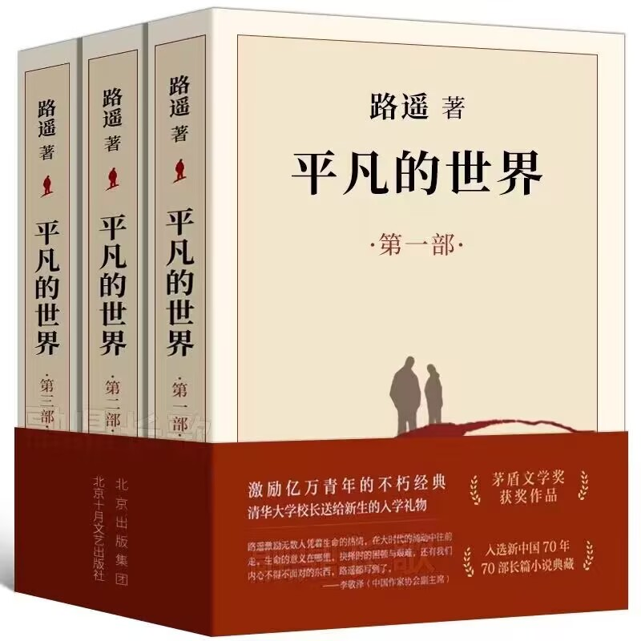

那些令人动容的故事
-

平凡的世界
《平凡的世界》是路遥创作的一部关于中国乡村青年奋斗与成长的史诗性小说，深刻描绘了在改革开放前后的社会变迁中，主人公孙少安与孙少平兄弟俩以及他们身边的人们如何在贫困、压抑与困境中奋力追寻梦想、追求幸福的故事。小说通过对农村生活的真实刻画，展现了他们不屈不挠的精神力量以及对于命运的抗争。孙少平从一个贫困的农家少年，逐步走向城市，探索更广阔的世界，而孙少安则选择坚守在农村，用自己的方式改变命运。两人的成长轨迹代表了那个时代无数青年人的奋斗与梦想。
-
百年孤独
《百年孤独》是加西亚·马尔克斯的魔幻现实主义杰作，讲述了布恩迪亚家族七代人的传奇与悲剧。从创立马孔多的乌尔苏拉与何塞·阿尔卡迪奥开始，家族经历了繁荣与衰败，荣耀与堕落，情感的纠葛与命运的重蹈。每一代人的孤独似乎都在前人的阴影下延续，尽管他们试图逃脱历史的桎梏，却始终无法挣脱宿命的循环。马孔多作为一个象征，既是时间与空间的交错，也是个人与集体命运的沉浮。 孤独既是人类生存的深刻隐喻，也是无法回避的内心之痛。家族成员无论如何追寻或逃避，孤独始终如影随形，最终化为一种无法言说的宿命.马尔克斯揭示了人类在历史洪流中对抗命运的脆弱与抗争的无力，提问我们在孤独与遗忘之间，究竟能否找到真正的自由。
-
孤独摇滚
《孤独摇滚！》讲述了一个关于青春、梦想与自我发现的故事。主人公后藤一里，一个内心充满孤独的高中生，通过对摇滚音乐的热爱，逐渐找到了属于自己的舞台。尽管她起初因缺乏自信而陷入沉默，但在与乐队成员们的相遇和互动中，她的内心世界得以解放。通过与他人的合作与冲突，逐渐学会了如何表达自我，如何面对生活中的不完美与挑战。最终，她在音乐的旋律中找到了自我认同，重新定义了孤独与成长的意义。 在追求梦想的道路上，孤独是难免的，但正是这些孤独与挣扎，构成了青春最真实、最动人的篇章。孤独是一时的，你要相信，总会有那个站在阳光下的人，在未来等着你。
-
葬送的芙莉莲
《葬送的芙莉莲》讲述了不死魔法师芙莉莲在击败魔王后，目送英雄团的成员一一老去与逝去的孤独旅程。她横跨岁月，见证着世界的变迁，却始终无法摆脱那份因时间流逝而愈加深沉的空虚与遗憾。在她的冒险旅程中，年轻的伙伴们成了她渐渐领悟人生与死亡意义的引路人。虽然拥有不朽的生命，她却逐渐发现，正是短暂的生命与成长的过程赋予了每个瞬间的珍贵与深刻。在不死与死亡、过去与未来的交织中，芙莉莲学会了如何珍惜与传承——她明白，真正的英雄并非无所不能，而是在有限的时光里，选择去理解、去陪伴、去爱。作品的精神内核在于，面对生命的无常，我们更应拥抱成长的意义与人与人之间的深情。